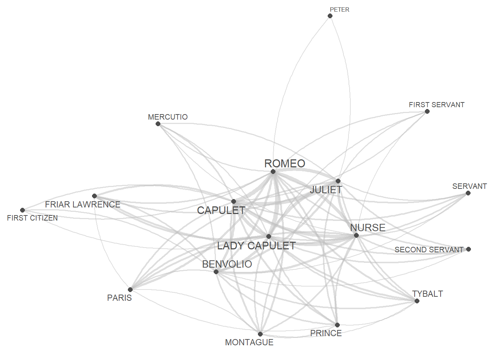

Section 6 Network Analysis
Networks are a powerful method for visualizing relationships among various elements, such as authors, characters, or words (Silge and Robinson 2017, 131–37). Network analysis goes beyond mere visualization; it’s a technique for uncovering patterns and structures within complex systems. In essence, network analysis represents relationships as nodes (elements) connected by edges (relationships) which provides a unique perspective for understanding the connections and interactions within your data.
Networks, also known as graphs, are powerful tools that represent relationships among entities. They consist of nodes (often depicted as dots) and edges (typically represented as lines) and can be categorized as directed or undirected networks.
- In directed networks, the direction of edges is captured, signifying the flow or relationship from one node to another. An example of a directed network is the trade relationships between countries, where arrows on the edges indicate the direction of exports. The thickness of these arrows can also encode additional information, such as the frequency or strength of the relationship.
- Undirected networks, on the other hand, represent symmetric relationships where the connection between two nodes is mutual. For example, in a social network, the connections between individuals are often undirected, as the relationship between friends is reciprocal.
Network analysis involves exploring the structure and properties of these networks. One key concept is centrality, which identifies the most important nodes in a network. Centrality metrics, such as degree centrality (number of connections) and betweenness centrality (importance in connecting other nodes), help unveil the significance of specific nodes.
In R, there are several packages that provide essential tools for constructing, analyzing, and visualizing networks but here, we will focus on the quanteda.textplots, igraph, tidygraph, and ggraph packages. To showcase how to prepare and generate network graphs, we will visualize the network that the characters in William Shakespeare’s Romeo and Juliet form.
6.1 Data preparation
In network analysis, it’s crucial to have at least one table indicating the start and end points of edges (lines connecting nodes). Additionally, two additional tables providing information on node size/type and edge size/type are valuable. In the upcoming sections, we’ll create these tables from raw data. Alternatively, you can generate network graphs by uploading tables containing the necessary information.
We’ll generate a network showing the frequency of characters in William Shakespeare’s Romeo and Juliet appearing in the same scene. Our focus is on investigating the networks of personas in Shakespeare’s Romeo and Juliet, and thus, we’ll load this renowned work of fiction.
6.2 Creating a matrix
We start by loading the data which represents a table that contains the personas that are present during a sub-scene as well as how many contributions they make and how often they occur.
# load data
net_dat <- read.delim("https://slcladal.github.io/data/romeo_tidy.txt", sep = "\t")
# inspect data
net_dat %>%
as.data.frame() %>%
head(15)## actscene person contrib occurrences
## 1 ACT I_SCENE I BENVOLIO 24 7
## 2 ACT I_SCENE I CAPULET 2 9
## 3 ACT I_SCENE I FIRST CITIZEN 1 2
## 4 ACT I_SCENE I LADY CAPULET 1 10
## 5 ACT I_SCENE I MONTAGUE 6 3
## 6 ACT I_SCENE I PRINCE 1 3
## 7 ACT I_SCENE I ROMEO 16 14
## 8 ACT I_SCENE I TYBALT 2 3
## 9 ACT I_SCENE II BENVOLIO 5 7
## 10 ACT I_SCENE II CAPULET 3 9
## 11 ACT I_SCENE II PARIS 2 5
## 12 ACT I_SCENE II ROMEO 11 14
## 13 ACT I_SCENE II SERVANT 8 3
## 14 ACT I_SCENE III JULIET 5 11
## 15 ACT I_SCENE III LADY CAPULET 11 10We now transform that table into a co-occurrence matrix.
net_cmx <- crossprod(table(net_dat[1:2]))
diag(net_cmx) <- 0
net_df <- as.data.frame(net_cmx)
# inspect data
net_df[1:5, 1:5]%>%
as.data.frame() %>%
tibble::rownames_to_column("Persona")## Persona BALTHASAR BENVOLIO CAPULET FIRST CITIZEN FIRST SERVANT
## 1 BALTHASAR 0 0 1 0 0
## 2 BENVOLIO 0 0 3 2 1
## 3 CAPULET 1 3 0 1 2
## 4 FIRST CITIZEN 0 2 1 0 0
## 5 FIRST SERVANT 0 1 2 0 0The data shows how often a character has appeared with each other character in the play - only Friar Lawrence and Friar John were excluded because they only appear in one scene where they talk to each other.
6.3 Visualizing Networks
There are various different ways to visualize a network structure. We will focus on two packages for network visualization here and exemplify how you can visualize networks in R.
6.3.1 Quanteda Networks
The quanteda package contains many very useful functions for analyzing texts. Among these functions is the textplot_network function which provides a very handy way to display networks. The advantage of the network plots provided by or generated with the quanteda package is that you can create them with very little code. However, this comes at a cost as these visualizations cannot be modified easily (which means that their design is not very flexible compared to other methods for generating network visualizations).
In a first step, we transform the text vectors of the romeo data into a document-feature matrix using the dfm function.
# create a document feature matrix
net_dfm <- quanteda::as.dfm(net_df)
# create feature co-occurrence matrix
net_fcm <- quanteda::fcm(net_dfm, tri = F)
# inspect data
head(net_fcm)## Feature co-occurrence matrix of: 6 by 18 features.
## features
## features BALTHASAR BENVOLIO CAPULET FIRST CITIZEN FIRST SERVANT
## BALTHASAR 1 25 31 11 6
## BENVOLIO 25 39 93 39 27
## CAPULET 31 93 65 42 39
## FIRST CITIZEN 11 39 42 6 10
## FIRST SERVANT 6 27 39 10 3
## FRIAR LAWRENCE 20 53 74 18 17
## features
## features FRIAR LAWRENCE JULIET LADY CAPULET MERCUTIO MONTAGUE
## BALTHASAR 20 26 31 11 17
## BENVOLIO 53 87 99 42 55
## CAPULET 74 131 117 52 65
## FIRST CITIZEN 18 32 36 24 29
## FIRST SERVANT 17 40 42 12 15
## FRIAR LAWRENCE 15 61 72 23 32
## [ reached max_nfeat ... 8 more features ]This feature-co-occurrence matrix can then serve as the input for the textplot_network function which already generates a nice network graph.
Now we generate a network graph using the textplot_network function from the quanteda.textplots package. This function has the following arguments:
x: a fcm or dfm object
min_freq: a frequency count threshold or proportion for co-occurrence frequencies of features to be included (default = 0.5),
omit_isolated: if TRUE, features do not occur more frequent than min_freq will be omitted (default = TRUE),
edge_color: color of edges that connect vertices (default = “#1F78B4”),edge_alpha: opacity of edges ranging from 0 to 1.0 (default = 0.5),edge_size: size of edges for most frequent co-occurrence (default = 2),vertex_color: color of vertices (default = “#4D4D4D”),vertex_size: size of vertices (default = 2),vertex_labelcolor: color of texts. Defaults to the same as vertex_color,vertex_labelfont: font-family of texts,vertex_labelsize: size of vertex labels in mm. Defaults to size 5. Supports both integer values and vector values (default = 5),offset: if NULL (default), the distance between vertices and texts are determined automatically,
quanteda.textplots::textplot_network(
x = net_fcm, # a fcm or dfm object
min_freq = 0.5, # frequency count threshold or proportion for co-occurrence frequencies (default = 0.5)
edge_alpha = 0.5, # opacity of edges ranging from 0 to 1.0 (default = 0.5)
edge_color = "gray", # color of edges that connect vertices (default = "#1F78B4")
edge_size = 2, # size of edges for most frequent co-occurrence (default = 2)
# calculate the size of vertex labels for the network plot
vertex_labelsize = net_dfm %>%
# convert the dfm object to a data frame
quanteda::convert(to = "data.frame") %>%
# exclude the 'doc_id' column
dplyr::select(-doc_id) %>%
# calculate the sum of row values for each row
rowSums() %>%
# apply the natural logarithm to the resulting sums
log(),
vertex_color = "#4D4D4D", # color of vertices (default = "#4D4D4D")
vertex_size = 2 # size of vertices (default = 2)
)
We now turn to generating tidy networks with is more complex but also offers more flexibility and options for customization.
6.3.2 Tidy Networks
We now turn to a different method for generating networks that is extremely flexible.
First, we define the nodes and we can also add information about the nodes that we can use later on (such as frequency information).
# create a new data frame 'va' using the 'net_dat' data
net_dat %>%
# rename the 'person' column to 'node' and 'occurrences' column to 'n'
dplyr::rename(node = person,
n = occurrences) %>%
# group the data by the 'node' column
dplyr::group_by(node) %>%
# summarize the data, calculating the total occurrences ('n') for each 'node'
dplyr::summarise(n = sum(n)) -> va
# inspect
va %>%
as.data.frame() %>%
head(10)## node n
## 1 BALTHASAR 4
## 2 BENVOLIO 49
## 3 CAPULET 81
## 4 FIRST CITIZEN 4
## 5 FIRST SERVANT 4
## 6 FRIAR LAWRENCE 49
## 7 JULIET 121
## 8 LADY CAPULET 100
## 9 MERCUTIO 16
## 10 MONTAGUE 9The next part is optional but it can help highlight important information. We add a column with additional information to our nodes table.
# define family
mon <- c("ABRAM", "BALTHASAR", "BENVOLIO", "LADY MONTAGUE", "MONTAGUE", "ROMEO")
cap <- c("CAPULET", "CAPULET’S COUSIN", "FIRST SERVANT", "GREGORY", "JULIET", "LADY CAPULET", "NURSE", "PETER", "SAMPSON", "TYBALT")
oth <- c("APOTHECARY", "CHORUS", "FIRST CITIZEN", "FIRST MUSICIAN", "FIRST WATCH", "FRIAR JOHN" , "FRIAR LAWRENCE", "MERCUTIO", "PAGE", "PARIS", "PRINCE", "SECOND MUSICIAN", "SECOND SERVANT", "SECOND WATCH", "SERVANT", "THIRD MUSICIAN")
# create color vectors
va <- va %>%
dplyr::mutate(type = dplyr::case_when(node %in% mon ~ "MONTAGUE",
node %in% cap ~ "CAPULET",
TRUE ~ "Other"))
# inspect updates nodes table
head(va, 10)## # A tibble: 10 × 3
## node n type
## <chr> <int> <chr>
## 1 BALTHASAR 4 MONTAGUE
## 2 BENVOLIO 49 MONTAGUE
## 3 CAPULET 81 CAPULET
## 4 FIRST CITIZEN 4 Other
## 5 FIRST SERVANT 4 CAPULET
## 6 FRIAR LAWRENCE 49 Other
## 7 JULIET 121 CAPULET
## 8 LADY CAPULET 100 CAPULET
## 9 MERCUTIO 16 Other
## 10 MONTAGUE 9 MONTAGUENow, we define the edges, i.e., the connections between nodes and, again, we can add information in separate variables that we can use later on.
# create a new data frame 'ed' using the 'dat' data
ed <- net_df %>%
# add a new column 'from' with row names
dplyr::mutate(from = rownames(.)) %>%
# reshape the data from wide to long format using 'gather'
tidyr::gather(to, n, BALTHASAR:TYBALT) %>%
# remove zero frequencies
dplyr::filter(n != 0)
# inspect
ed %>%
as.data.frame() %>%
head(10) ## from to n
## 1 CAPULET BALTHASAR 1
## 2 FRIAR LAWRENCE BALTHASAR 1
## 3 JULIET BALTHASAR 1
## 4 LADY CAPULET BALTHASAR 1
## 5 MONTAGUE BALTHASAR 1
## 6 PARIS BALTHASAR 1
## 7 PRINCE BALTHASAR 1
## 8 ROMEO BALTHASAR 2
## 9 CAPULET BENVOLIO 3
## 10 FIRST CITIZEN BENVOLIO 2Now that we have generated tables for the edges and the nodes, we can generate a graph object.
We will also add labels to the nodes as follows:
When we now plot our network, it looks as shown below.
# set seed (so that the exact same network graph is created every time)
set.seed(12345)
# create a graph using the 'tg' data frame with the Fruchterman-Reingold layout
tg %>%
ggraph::ggraph(layout = "fr") +
# add arcs for edges with various aesthetics
geom_edge_arc(colour = "gray50",
lineend = "round",
strength = .1,
aes(edge_width = ed$n,
alpha = ed$n)) +
# add points for nodes with size based on log-transformed 'v.size' and color based on 'va$Family'
geom_node_point(size = log(va$n) * 2,
aes(color = va$type)) +
# add text labels for nodes with various aesthetics
geom_node_text(aes(label = name),
repel = TRUE,
point.padding = unit(0.2, "lines"),
size = sqrt(va$n),
colour = "gray10") +
# adjust edge width and alpha scales
scale_edge_width(range = c(0, 2.5)) +
scale_edge_alpha(range = c(0, .3)) +
# set graph background color to white
theme_graph(background = "white") +
# adjust legend position to the top
theme(legend.position = "top",
# suppress legend title
legend.title = element_blank()) +
# remove edge width and alpha guides from the legend
guides(edge_width = FALSE,
edge_alpha = FALSE)
6.4 Network Statistics
In addition to visualizing networks, we will analyze the network and extract certain statistics about the network that tell us about structural properties of networks.
To extract the statistics, we use the edge object generated above (called ed) and then repeat each combination as often as it occurred based on the value in the Frequency column.
dg <- ed[rep(seq_along(ed$n), ed$n), 1:2]
rownames(dg) <- NULL
# inspect data
dg %>%
as.data.frame() %>%
head(10)## from to
## 1 CAPULET BALTHASAR
## 2 FRIAR LAWRENCE BALTHASAR
## 3 JULIET BALTHASAR
## 4 LADY CAPULET BALTHASAR
## 5 MONTAGUE BALTHASAR
## 6 PARIS BALTHASAR
## 7 PRINCE BALTHASAR
## 8 ROMEO BALTHASAR
## 9 ROMEO BALTHASAR
## 10 CAPULET BENVOLIO6.4.1 Degree centrality
We now generate an edge list from the dg object and then extract the degree centrality. The degree centrality reflects how many edges each node has with the most central node having the highest value.
dgg <- graph.edgelist(as.matrix(dg), directed = T)
# extract degree centrality
igraph::degree(dgg) %>%
as.data.frame() %>%
tibble::rownames_to_column("node") %>%
dplyr::rename(`degree centrality` = 2) %>%
dplyr::arrange(-`degree centrality`) -> dc_tbl
# inspect data
dc_tbl %>%
as.data.frame() %>%
head(10) ## node degree centrality
## 1 ROMEO 108
## 2 CAPULET 92
## 3 LADY CAPULET 90
## 4 NURSE 76
## 5 JULIET 72
## 6 BENVOLIO 68
## 7 MONTAGUE 44
## 8 PRINCE 44
## 9 TYBALT 44
## 10 PARIS 426.4.3 Betweenness centrality
We now extract the betweenness centrality. Betweenness centrality provides a measure of how important nodes are for information flow between nodes in a network. The node with the highest betweenness centrality creates the shortest paths in the network. The higher a node’s betweenness centrality, the more important it is for the efficient flow of goods in a network.
igraph::betweenness(dgg) %>%
as.data.frame() %>%
tibble::rownames_to_column("node") %>%
dplyr::rename(`betweenness centrality` = 2) %>%
dplyr::arrange(-`betweenness centrality`) -> bc_tbl
# inspect data
bc_tbl %>%
as.data.frame() %>%
head(10)## node betweenness centrality
## 1 ROMEO 27.624370
## 2 LADY CAPULET 16.276864
## 3 CAPULET 15.623219
## 4 BENVOLIO 9.615121
## 5 NURSE 7.401454
## 6 JULIET 5.554710
## 7 TYBALT 3.199408
## 8 MONTAGUE 2.182203
## 9 PRINCE 2.182203
## 10 PARIS 1.8594296.4.4 Closeness
In addition, we extract the closeness statistic of all edges in the dg object by using the closeness function from the igraph package. Closeness centrality refers to the shortest paths between nodes. The distance between two nodes represents the length of the shortest path between them. The closeness of a node is the average distance from that node to all other nodes.
igraph::closeness(dgg) %>%
as.data.frame() %>%
tibble::rownames_to_column("node") %>%
dplyr::rename(closeness = 2) %>%
dplyr::arrange(-closeness) -> c_tbl
# inspect data
c_tbl %>%
as.data.frame() %>%
head(10)## node closeness
## 1 LADY CAPULET 0.05882353
## 2 ROMEO 0.05882353
## 3 CAPULET 0.05555556
## 4 BENVOLIO 0.05263158
## 5 JULIET 0.05000000
## 6 NURSE 0.04761905
## 7 TYBALT 0.04761905
## 8 MONTAGUE 0.04545455
## 9 PARIS 0.04545455
## 10 PRINCE 0.04545455